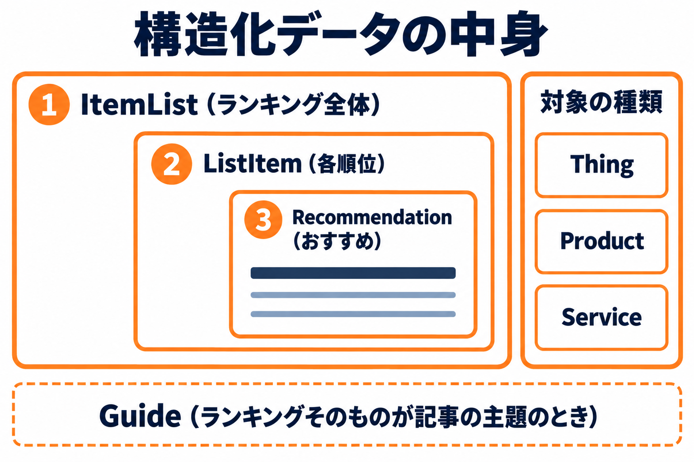
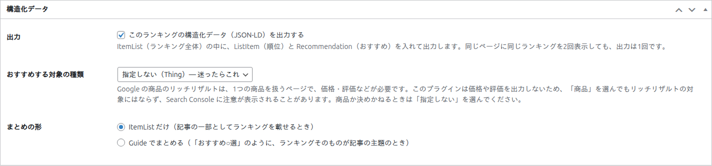
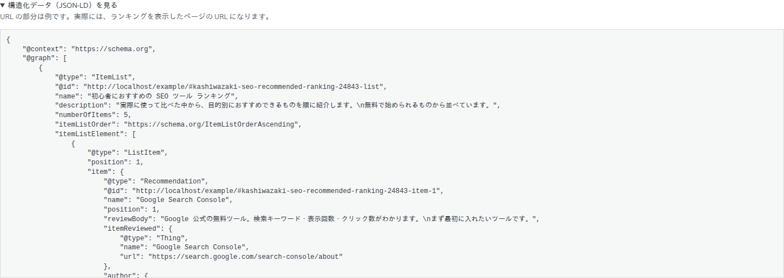
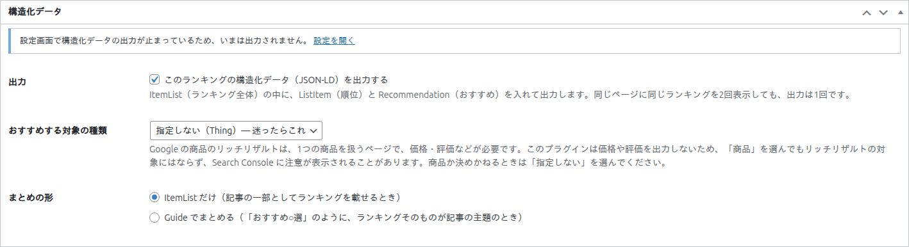

構造化データ
ランキングを検索エンジンなどに伝えるための構造化データ（JSON-LD）を、ランキングごとに設定する方法です。

構造化データ（JSON-LD）は、ページの内容を、検索エンジンなどのプログラムが読み取りやすい形で書いたデータです。このプラグインは、ページに表示したランキングと同じ内容を、構造化データとして出力できます。ランキングの編集画面のボックス「構造化データ」で、ランキングごとに決めます。
構造化データは、検索エンジンがランキングの構造を読み取る助けになる場合があります。ただし、検索結果での表示や順位への影響は、検索エンジンの判断によります。

項目の一覧
| 項目 | 説明 | 既定値 |
|---|---|---|
| 出力 | 「このランキングの構造化データ（JSON-LD）を出力する」のチェックです。外すと、このランキングの構造化データは出力されません。 | オン |
| おすすめする対象の種類 | ランキングに並べたものが、何の種類かを選びます。 | 指定しない（Thing） |
| まとめの形 | ランキング全体を、どの形でまとめて出力するかを選びます。 | ItemList だけ |
出力される内容
名称のある順位だけが、出力されます。ランキングは、次の入れ子の形で出力されます。
| 名前 | 意味・入る内容 |
|---|---|
| ItemList（ランキング全体） | 見出し（空欄のときは管理用の名前）・概要説明・順位の数・「1 位から順」という並び順。 |
| ListItem（各順位） | 順位の番号。 |
| Recommendation（おすすめ） | 名称・順位・簡単な説明・おすすめしている人（author）。 |
| おすすめする対象 | 名称と、URL を入力していれば URL。種類は「おすすめする対象の種類」で選んだものです。 |
- 出力される文字は、ページに表示される文字と同じです。
- 構造化データは、ランキングを表示したページの中に、
scriptとして出力されます（ページを見ても画面には表示されません）。 - ランキングを表示していないページには、出力されません。
- 同じページに同じランキングを 2 回置いても、出力は 1 回です。
- 価格や評価は、出力しません。
入力中の内容で出力される構造化データは、出力がオンのとき、プレビューの「構造化データ（JSON-LD）を見る」で確かめられます。

出力のオン・オフ
構造化データが出力されるのは、次の両方がオンのときです。
- 設定画面の「構造化データの出力」（すべてのランキングに働きます）
- このランキングの「出力」のチェック
設定画面で出力を止めているときは、このボックスの上に、「設定画面で構造化データの出力が止まっているため、いまは出力されません。」という案内が出ます。管理者には、設定画面を開くリンク「設定を開く」も出ます。

おすすめする対象の種類
| 選択肢 | 使いどころ |
|---|---|
| 指定しない（Thing）— 迷ったらこれ | どれにも当てはまらないとき、決めかねるときに選びます。 |
| 商品（Product） | 並べたものが、商品のときに選びます。 |
| サービス（Service） | 並べたものが、サービスのときに選びます。 |
Google の商品のリッチリザルトは、1 つの商品を扱うページで、価格・評価などが必要です。このプラグインは価格や評価を出力しないため、「商品」を選んでもリッチリザルトの対象にはならず、Search Console に注意が表示されることがあります。商品か決めかねるときは、「指定しない」を選んでください。
まとめの形
| 選択肢 | 使いどころと結果 |
|---|---|
| ItemList だけ | 記事の一部として、ランキングを載せるときに選びます。ランキング全体（ItemList）だけを出力します。 |
| Guide でまとめる | 「おすすめ○選」のように、ランキングそのものが記事の主題のときに選びます。ランキング全体のほかに、それをまとめる Guide（ガイド）も出力します。Guide には、見出し・概要説明・おすすめしている人（author）が入ります。 |
おすすめしている人（author）
誰がおすすめしているかを、構造化データに入れるかどうかは、設定画面の「おすすめしている人（author）」で決めます（すべてのランキングに働きます）。
| 選択肢 | 結果 |
|---|---|
| 表示しているページの投稿者（人） | ページの投稿者の表示名（と、投稿者のページの URL）を入れます。投稿・固定ページ以外（一覧ページのウィジェットなど）では、サイト名を使います。 |
| サイト名（組織） | サイトの名前（と、サイトの URL）を入れます。 |
| 出力しない | おすすめしている人は、入れません。 |